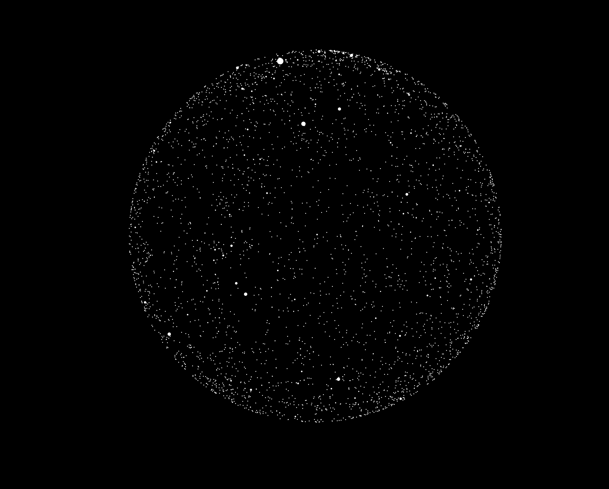
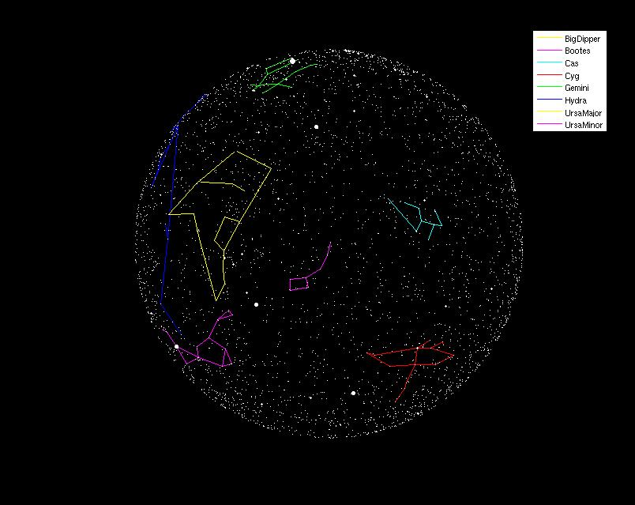

Topic: Stars and Constellations
Related Reading: file I/O, plotting
For this assignment, you must work individually in regard to the design and implementation of your project.
Our goal for this problem is to create an image based upon underlying data about the stars and constellations. Our version of the project is a variant of a nifty assignment designed by Karen Reid at the University of Toronto.
As an example, here is a
figure that shows a view of the night sky (click on the image
for a larger version):

Here is a second version of the image that also includes the display
of several major constellations.

The raw data for this assignment is provided in the form of two different text files:
This file has one line for each star, with each line containing six pieces of information, separated by spaces. Those six fields are respectively
For example, the data corresponding to the Big Dipper appears as follows:
Big Dipper 7 120315 116656 116656 112185 112185 106591 106591 103287 103287 95418 95418 95689 106591 95689
To get the basic star image in Matlab, we rely upon the scatter command. We use the form scatter(X,Y,S,C,'filled') where X is a vector of x-values, Y is a vector of y-values, S is a corresponding vector of scales (brightnesses for our application), and C designates color. For this assignment, we use 'w' as the color for all stars. The final parameter 'filled' designates that the circles should be drawn as filled rather than the default outline.
To plot white stars against a black background, we need to configure the basic figure window. As with previous plots, it is also important that we force the two axes to be drawn with an equivalent scale so that the image is circular. You may use the following function in order to setup the figure window.
function plotSky % This sets up a basic figure window for our plot of the sky. % It sets the background to black and sets the axes to be % equal but undisplayed. % % This function leaves the size as the default, but the user % can manually resize the figure window for a larger view. clf; hold off; % start a new figure axis equal; % ensure equal treatment of x and y axes axis off; % do not display the actual axes set(gcf,'Color','k'); % set background color to black hold on;
The constellation line segments are drawn based on the use of the plot command for each individual line segment, using the x and y coordinates for the two designated stars. To get all segments from the same constellation in the same color, but different constellations in different colors, we use the following hack. We have a string 'ymcrgb' which contains six character codes for the colors yellow, magenta, cyan, red, green, and blue. For each constellation, we pick one of those characters and use it when calling plot to control the color. Then when we move to a new constellation, we advance one character in that control string (wrapping around to the beginning if necessary).
Although we expect that in completing this assignment, you should start by working on the function to plot the stars, and then the function to plot the constellation, the final image will look nicer if you plot the constellations first and the stars second, because then the stars will be drawn on top of the constellation lines (making it easier to see the stars that define the constellations).
As af final note, our image includes a legend to identify the names of the constellations. Providing that feature is considered extra credit for the sake of this assignment.
To divide up the work more clearly, you are to write three different functions, described as follows.
Generate the legend when plotting the constellations.
{kind=link}
{kind=link}